Don't Be Afraid to Ask
Unique & Unusual Woodworking Projects in Ottawa
From ancient instruments to wellness tools – no project is too unusual. We research, we learn, and we craft with precision.
Some of the Most Rewarding Projects Start with "Can You Make...?"
At Ottawa Handiman, we don't just say yes – we dive deep into understanding what you need, why it matters, and how to craft it perfectly.
Have an Unusual Request? Let's Talk!Porch Planter Boxes with Integrated Privacy Fence
Custom Cedar Planters Built as the Foundation for a Privacy Fence
More Than Just Planters
"My daughter wanted privacy on her porch but didn't want a plain fence. We designed planter boxes that double as the base of a privacy fence — they hold flowers and block the view. Two jobs in one build."
– Ottawa Handiman
These cedar planter boxes were built for a porch privacy fence project. Rather than bolting a fence to the deck, the planters serve as the base — heavy, stable, and functional. The fence sections will attach directly to the planters, creating a clean, integrated look that adds greenery and privacy at the same time.
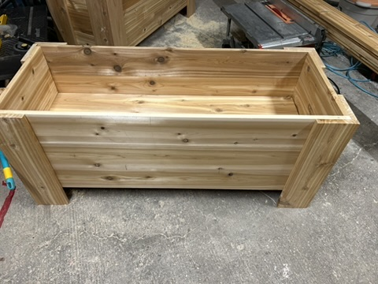
One of the cedar planter boxes — built to serve as the base of a privacy fence
The Build Process
Design & Planning
Sized the planters to fit the porch layout and support the fence sections that will attach to them
Cedar Construction
Built from cedar for natural weather resistance — no chemical treatment needed around plants
Multiple Sizes
Different planter sizes to fit different sections of the porch and accommodate various plants
Fence Integration
Planters designed with built-in mounting points for the privacy fence panels
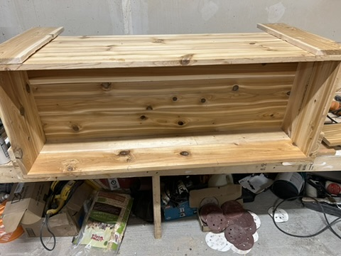
Side view showing the solid cedar construction
Ready for the Porch
Multiple cedar planter boxes built and ready for installation. Once on the porch, the privacy fence sections will attach to create a seamless barrier that's part garden, part privacy screen — a practical solution that looks better than a plain fence.
Natural cedar — weather-resistant and plant-safe
Dual-purpose: planters and fence base in one
Multiple sizes to fit the porch layout
Designed for integrated privacy fence attachment
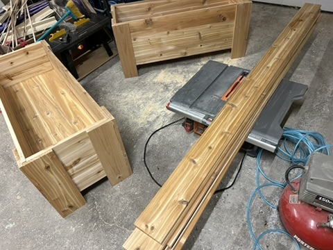
The planter boxes alongside the fence lumber — ready for porch installation
Custom-Built Furniture Bench
A Full Build from Raw Lumber to Ready-to-Finish Interior Furniture
Built from Scratch for the Home
"A customer came to us wanting a custom bench for their home. They knew they wanted something solid and well-made — the kind of piece you build once and keep for years. We handled the full build and sanding, ready for whatever finish they decide on."
– Ottawa Handiman
This custom furniture bench was a full build — from selecting the lumber through to final sanding. Sturdy A-frame legs, a wide seat with clean lines, and a surface sanded smooth and ready for the owner to apply their choice of stain or finish. These photos were taken just before sanding began.
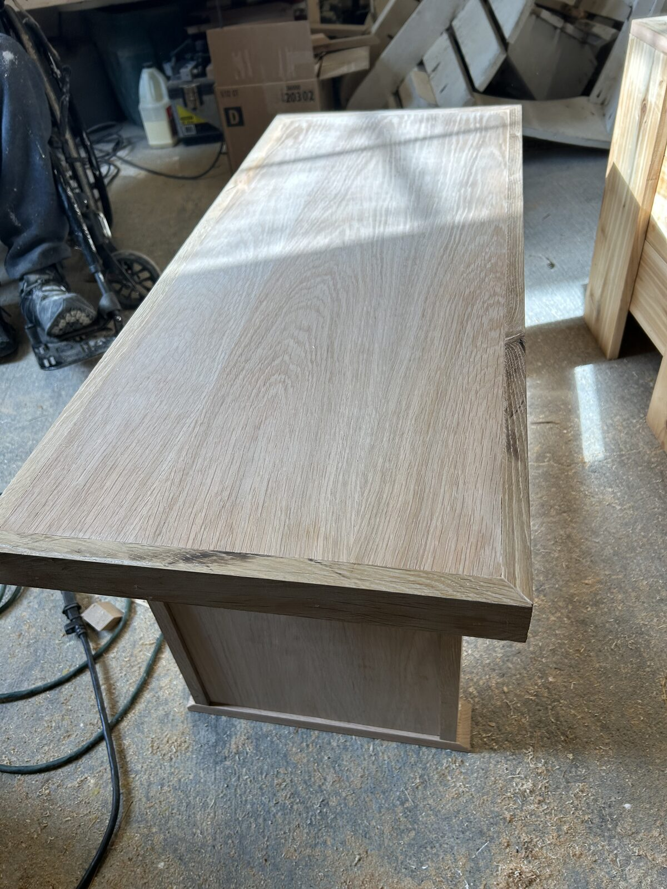
The bench fresh off the build — assembled and ready for sanding
The Build Process
Material Selection & Prep
Selected quality lumber and cut all pieces to size — seat boards, legs, and cross-bracing
Frame & Leg Assembly
Built solid A-frame legs with cross supports for stability and a clean, classic look
Seat Construction
Attached the wide seat boards to the frame, ensuring a flat, even surface across the top
Full Sanding
Sanded the entire piece smooth — ready for the owner to apply their preferred stain or finish
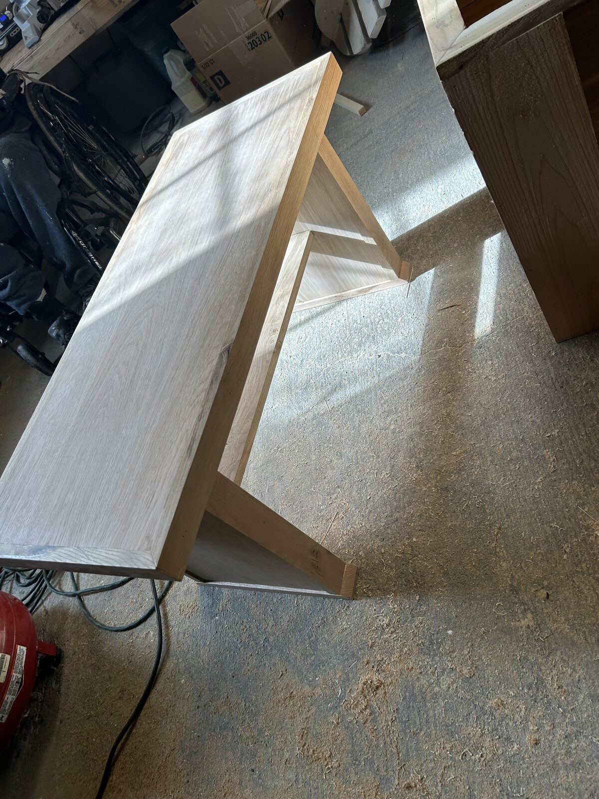
The completed bench — solid A-frame construction, sanded and ready to finish
Built in a Day, Made to Last
From raw lumber to a sanded, ready-to-finish furniture bench in a single day. Custom-built for interior home use — a solid piece of furniture made to the customer's specifications.
Full custom build — start to finish in one day
Sturdy A-frame design built for daily use
Sanded smooth and ready for owner's choice of finish
Custom interior furniture — built to specification
Child-Safe Reinforced Floating Shelf
Built to Withstand the Energy of a Kid's Room
More Than Just a Shelf
"When you're building something that goes on the wall in a child's room, you can't just hang it and hope for the best. Kids throw toys, crash into things, and test everything. This shelf needed to be reinforced so it could take a hit and stay put — no questions asked."
– Ottawa Handiman
A parent needed a floating shelf for their child's bedroom — somewhere to keep books, stuffed animals, and treasures within easy reach. But a child's room isn't a living room. Flying toys, roughhousing, and accidental bumps are just part of daily life. This shelf had to be mounted securely enough to withstand all of it.
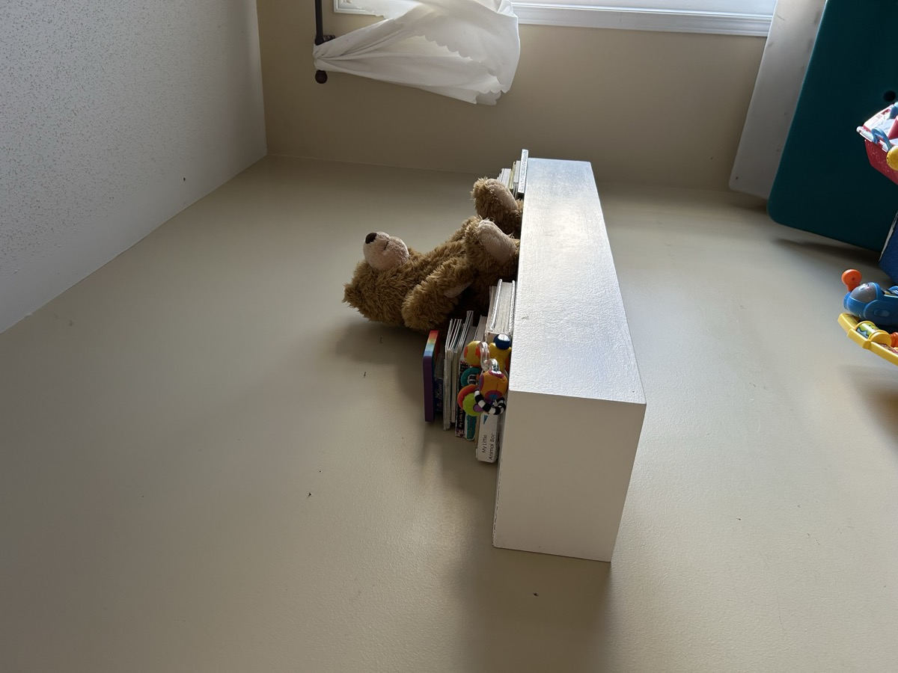
The finished shelf — loaded with books and a favourite bear, securely mounted for a child's room
The Build Process
Reinforced Internal Frame
Built with a hidden internal support structure designed to handle impact loads, not just static weight
Secure Wall Mounting
Anchored directly into wall studs with heavy-duty hardware — no drywall anchors that could pull free
Clean Finish
Smooth white finish to match the room's decor, with no sharp edges or exposed hardware
Impact Testing
Verified the shelf could withstand accidental strikes and lateral force before handing it over
Built for Real Life
The finished shelf sits clean and flush against the wall, holding books, toys, and a well-loved teddy bear. More importantly, it's going nowhere — reinforced mounting and solid construction mean it can handle whatever a rambunctious kid throws at it, literally.
Reinforced internal frame for impact resistance
Stud-mounted with heavy-duty hardware
Smooth, child-safe finish with no sharp edges
Designed for a child's room — built to last
Custom Live-Edge Charcuterie Boards
From Raw Walnut to Hand-Finished Heirloom Pieces
Making Something Special
"I picked up a few beautiful raw walnut boards and decided to finish them up in the shop with a food-safe beeswax finish. I made one for my daughter for Christmas – she got to pick the one she liked. Now I've got three left, and they're available if anyone's interested."
– Ottawa Handiman
Each board started as raw lumber with stunning natural live edges and unique grain patterns. The walnut's rich chocolate tones and natural character make every piece completely one-of-a-kind.
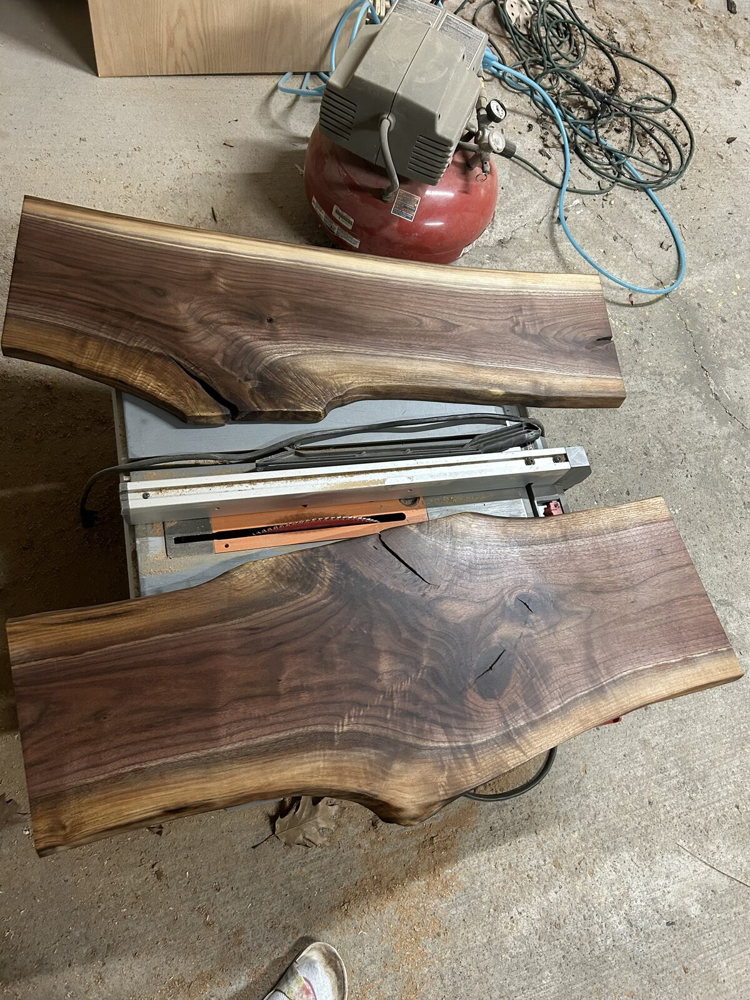
Raw walnut slabs with beautiful live edges, ready for transformation
The Crafting Process
Material Selection
Hand-selected raw walnut boards with natural live edges and striking grain patterns
Surfacing & Smoothing
Planed and sanded to perfection while preserving the natural edge character
Custom Handles
Added elegant metal handles for functionality and refined presentation
Beeswax Finish
Food-safe beeswax finish brings out the rich walnut tones and protects for years of use
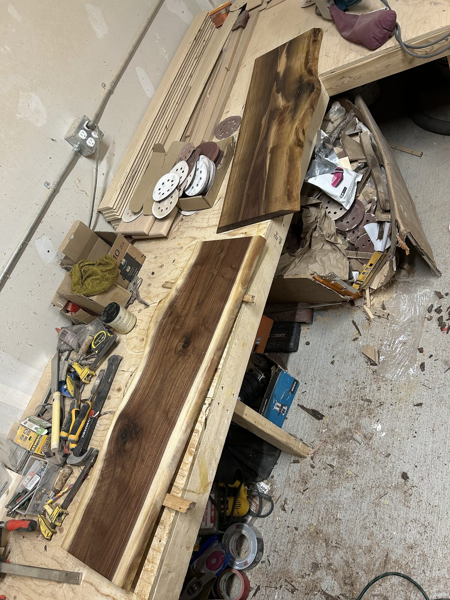
Workshop progress – handles added, ready for final finishing
The Finished Boards
Each board showcases the natural beauty of walnut – rich chocolate and caramel tones with dramatic grain patterns. The live edges preserve the organic character of the tree, while the smooth surfaces and metal handles make them as functional as they are beautiful.
100% natural walnut with live edges
Food-safe beeswax finish
Elegant metal handles
Perfect for charcuterie, serving, or display
3 Boards Available for Purchase
My daughter got first pick for Christmas, and I have three beautiful boards remaining. Each one is unique with its own grain pattern and character. Perfect for entertaining, gift-giving, or adding a handcrafted piece to your home.
Interested? Call 343.987.0900 or email ottawahandiman3@gmail.com
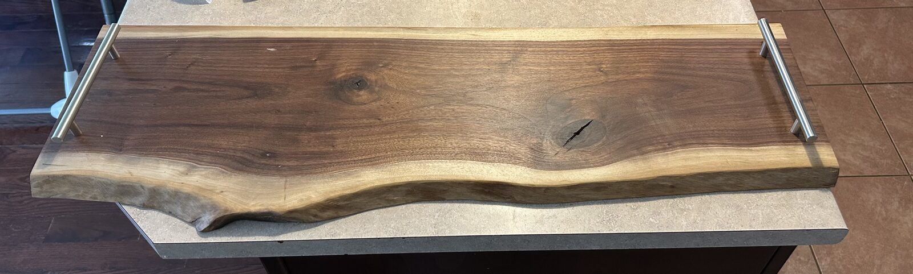
The finished product – natural beauty meets functional craftsmanship
Legacy Outdoor Chairs: When Love Means Rebuilding
Recreating 30-Year-Old Master Craftsmanship from Scratch
The Assessment
"The client wanted me to assess and refurbish two of his outdoor chairs. When I looked them over, I found wood rot throughout, so advised him they couldn't be repaired. However, I offered to copy them and build them from new."
He thought about that – given the price of wood these days, I can't blame him – but after some consideration, he asked me to go ahead.
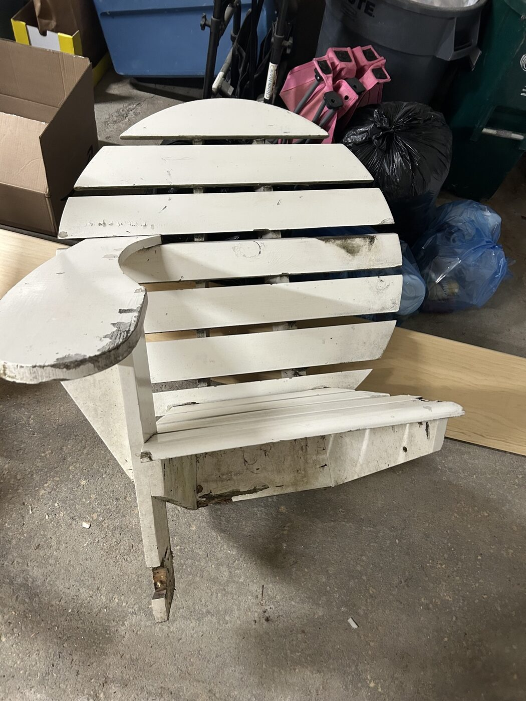
The original chairs after 30 years of faithful service
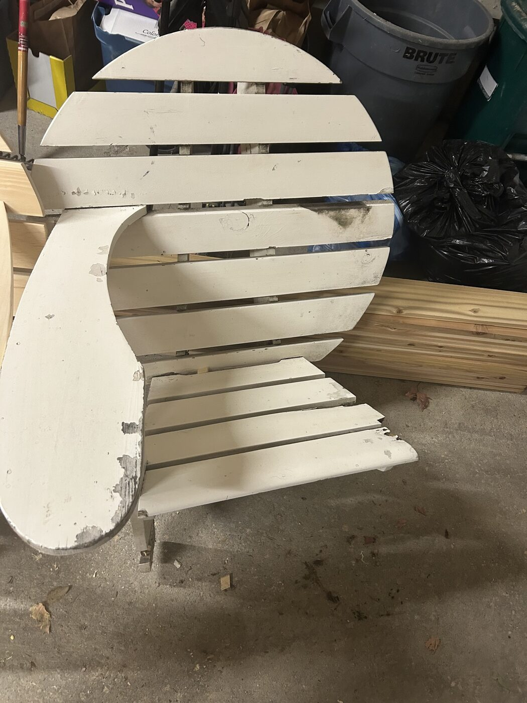
Close-up revealing extensive wood rot throughout
Discovering Master Craftsmanship
When I took them apart, I could tell they'd been built by a master carpenter – the angles of the cuts were impressive and the construction solid. It was no wonder those chairs lasted 30 years. However, time takes its toll.
The original builder had used complex compound angles and sophisticated joinery techniques that spoke to decades of experience. Every joint was thoughtfully designed for both strength and weather resistance. This wasn't just furniture – it was functional art.
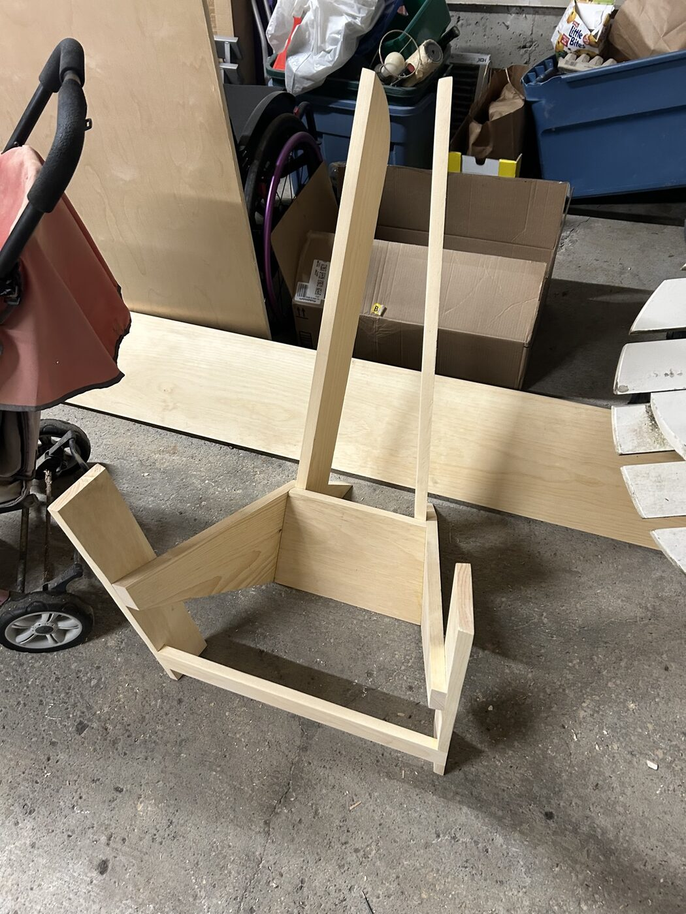
Disassembled parts revealing the master's complex angles
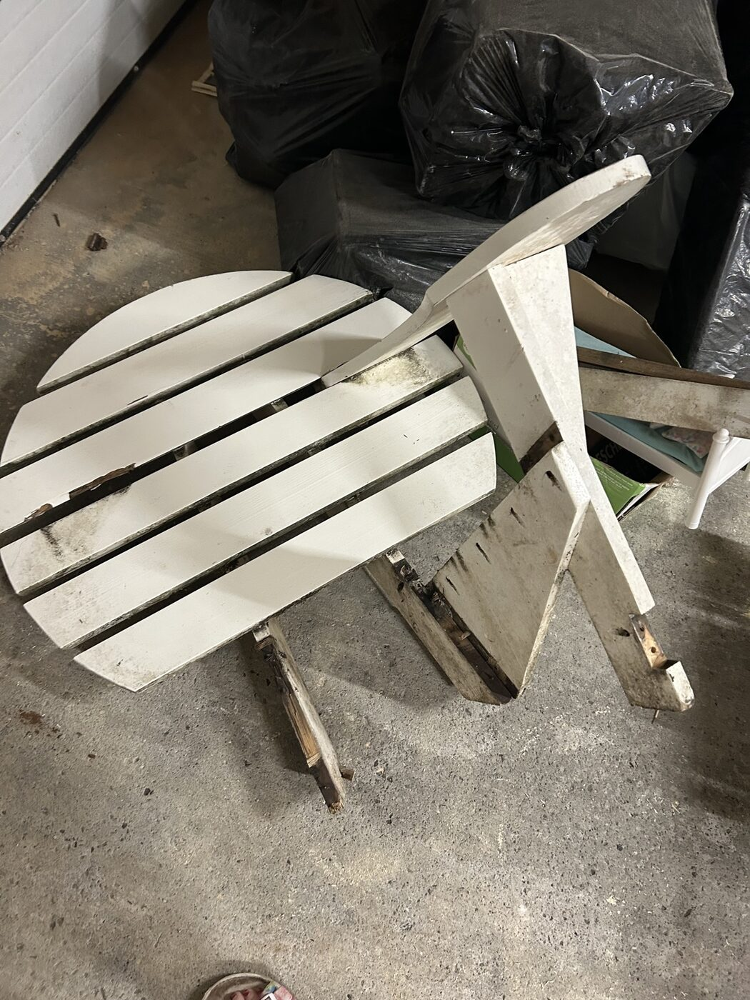
Original joinery showing decades of craftsmanship
The Rebuilding Process
Documentation
Carefully disassembled and documented every angle, measurement, and joint of the original chairs
Material Selection
Sourced weather-resistant lumber suitable for another 30 years of outdoor use
Precision Cutting
Replicated every compound angle and complex joint from the master's original design
Assembly & Finishing
Assembled with weather-resistant fasteners and applied protective finish for longevity

New chairs taking shape in the workshop
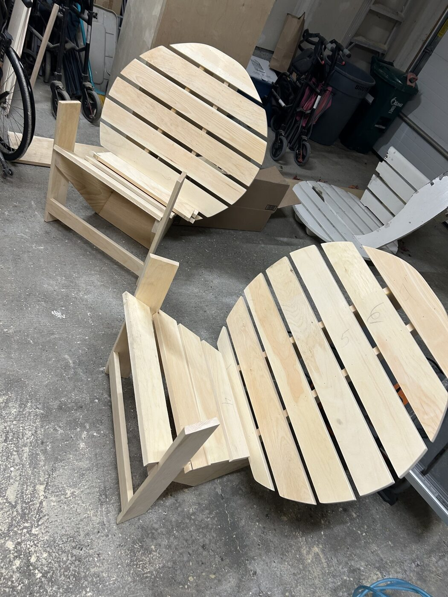
Framework assembly with precise angle replication
The Result
They were a lot of work, but worth it to the client. I can only hope that mine last as long as the originals did.
Preserved the original master craftsman's design
Built to last another 30 years
Client kept his beloved furniture legacy alive
Honored the original builder's skill
"Sometimes when you have something that you love, you never want to let it go. Do you have a project like that? Let me know and we can talk about it."
– Ottawa Handiman
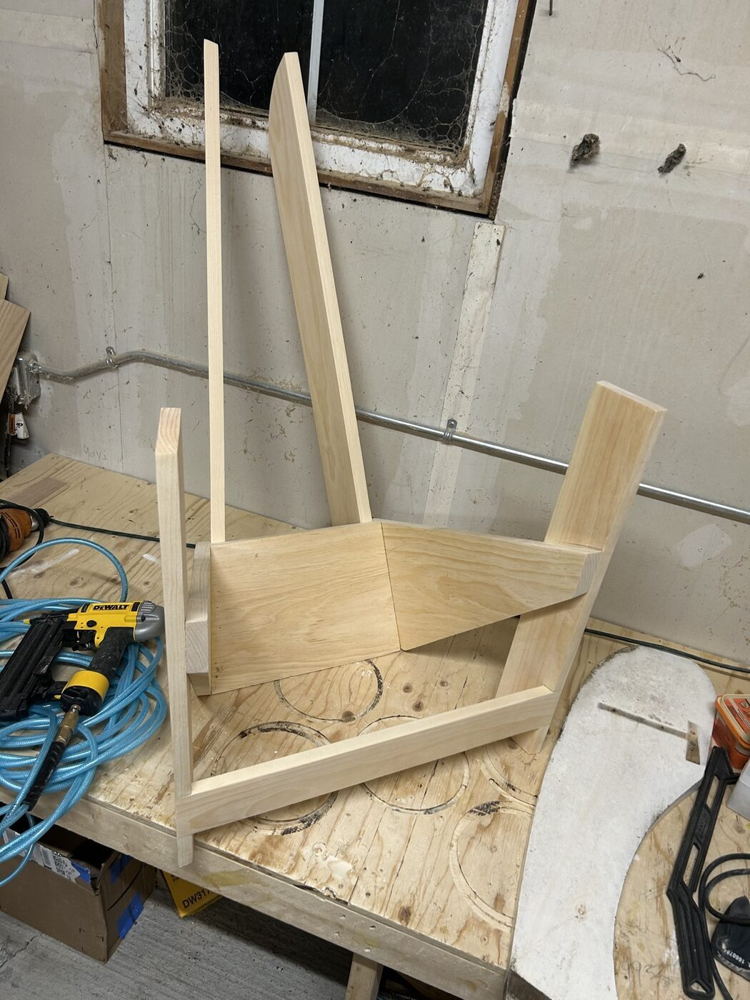
Precision-cut base showing faithful recreation of angles
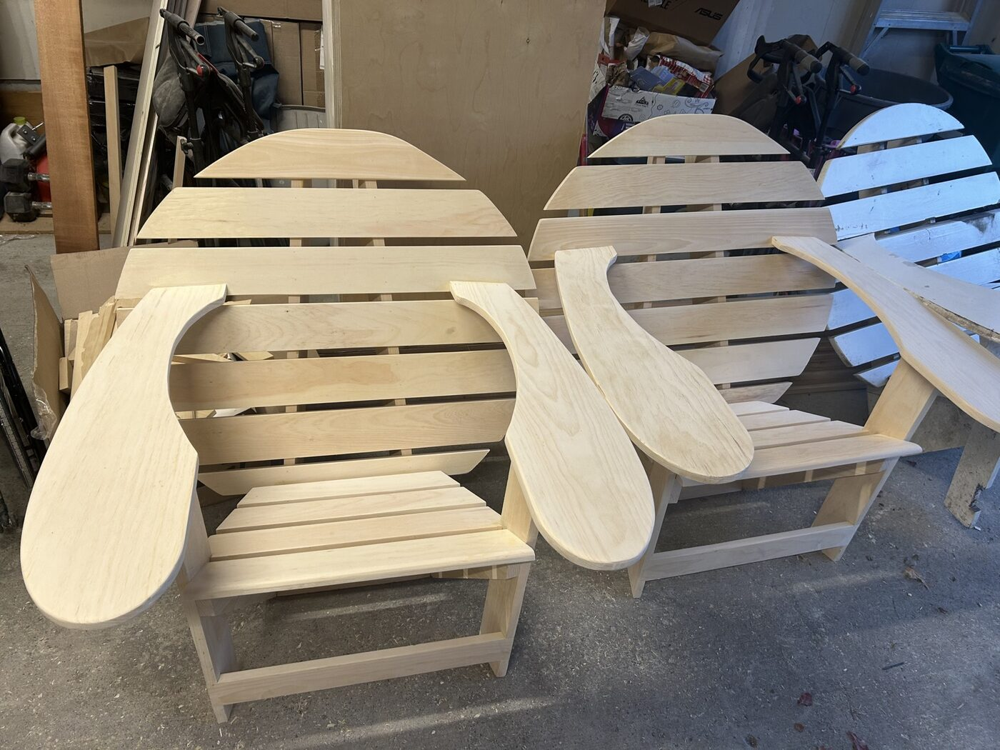
The finished chairs – ready for another 30 years
The Bullroarer Project
When Ancient Instruments Meet Modern Craftsmanship
The Unusual Request
"I was asked to create one of these by a client – a bullroarer – for her wellness practice. So I looked it up and using some wood I had on hand, crafted four of different sizes. I wasn't sure if they'd work, but she tried each one out and they all worked, but each had a unique pitch. I know she only wanted one, but it was an interesting project and I wanted to perfect the build."
– Ottawa Handiman
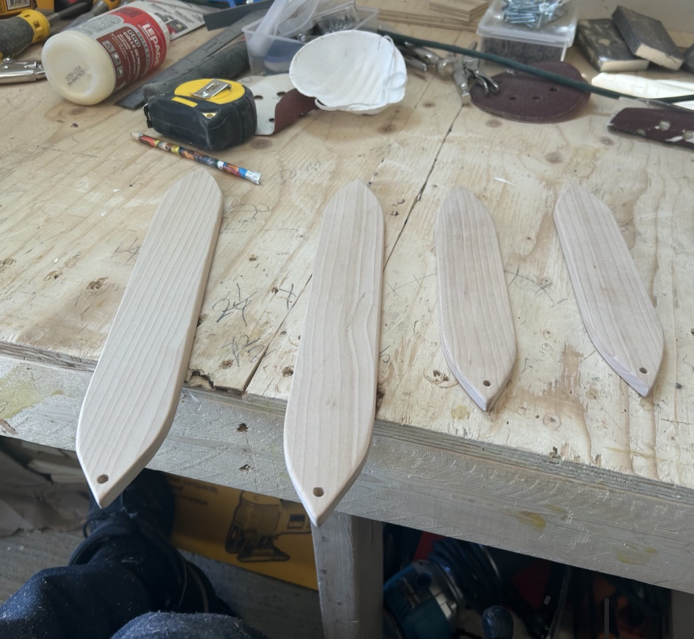
Four bullroarers crafted in different sizes, each producing a unique pitch
The Research: What is a Bullroarer?
A bullroarer is an ancient aerophone musical instrument – essentially a weighted, flat piece of wood attached to a string. When spun in circles, it produces a distinctive low-pitched roaring sound that can travel for miles.
Cultural Significance Around the World
- Australian Aboriginal: Sacred ritual tool, voice of the Rainbow Serpent, used in male initiation ceremonies
- Māori (New Zealand): Called pūrerehua ("moth"), used in healing and rainmaking ceremonies
- Ancient Greece: Known as rhombos, used in mystery cults to invoke divine presence
- Native American: Employed in rainmaking, healing, and as the voice of thunder
- Paleolithic Europe: Among humanity's oldest instruments, found in Stone Age sites
The Physics Behind the Sound
The rotating aerodynamic profile creates lift and pressure oscillations, producing the characteristic roaring sound. Different sizes create different pitches – larger bullroarers produce lower frequencies.
The Crafting Process
Material Selection
Selected quality wood from workshop stock, considering grain direction for strength and resonance
Shape & Size Design
Created four different sizes based on research, each designed to produce a different pitch
Precision Cutting
Carefully shaped each piece with the proper aerodynamic profile for optimal sound production
Testing & Refinement
Each bullroarer tested and refined until achieving the perfect balance and sound
The Result
What started as an unusual request for a wellness practice tool became a journey through 5,000 years of human history and culture. The client received not just one, but four bullroarers, each with its own unique voice.
Client delighted with the variety of pitches
Deep understanding of traditional craftsmanship gained
Ancient technique preserved through modern workshop
Perfect example of research-driven woodworking
When 'Discontinued' Isn't the End
Recreating Unavailable Fence Toppers Through Reverse Engineering
The Challenge
A client came to me wanting his fence toppers replaced after refurbishing his fence. The challenge? The style and size were no longer available anywhere – completely discontinued. He brought in one original topper, hoping I could recreate matching pieces.
This wasn't just about cutting wood to size. It required reverse engineering a discontinued product, understanding its design language, and replicating both the aesthetic and structural elements that made the original special. When manufacturers discontinue products, homeowners are often left with no options – that's where custom craftsmanship becomes invaluable.
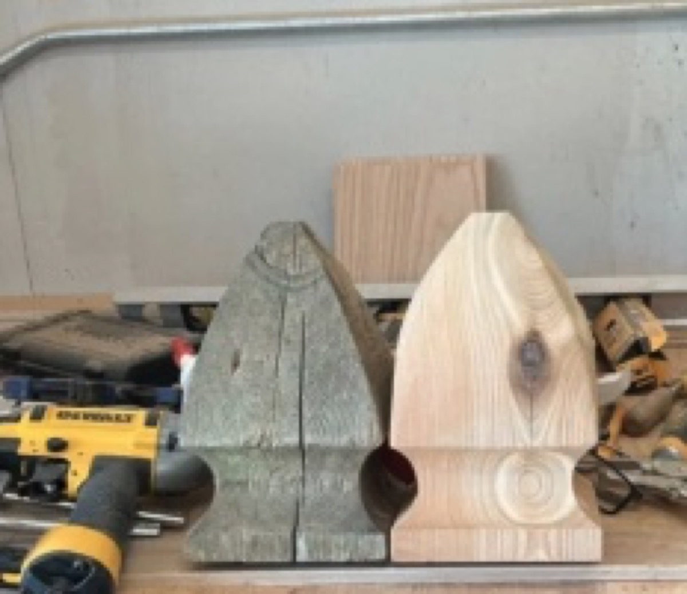
The original sample alongside fresh wood blanks ready for transformation
The Crafting Process
This project demanded a combination of traditional and precision techniques. Starting with careful measurements of the original, I created templates to ensure perfect replication.
Template Creation
Traced and measured the original to create precise patterns for replication
Rough Shaping
Cut the basic profiles using band saw and jigsaw for the curved elements
Hand Carving
Refined the decorative details and curves through careful hand carving
Progressive Sanding
Multiple grits of sanding to achieve the smooth, weather-ready finish
The combination of machine precision and hand craftsmanship was essential. While power tools provided the accuracy needed for perfect replication, the hand carving brought the character and subtle variations that make it feel authentic rather than mass-produced.
The Result
After careful work combining cutting, carving, and sanding, I delivered fence toppers that perfectly matched the original. Each piece maintained the distinctive profile and proportions that made the discontinued style special.
The client was thrilled – his refurbished fence could now be completed with matching toppers that looked like they'd always belonged there. What started as a seemingly impossible request (matching a discontinued product) became a successful demonstration of custom craftsmanship solving real-world problems.
"What I love most is seeing the project come together from what I first envisioned to putting that into a plan, and then pulling it all together. There's a satisfaction in working with wood and creating that I find fulfilling."
– Ottawa Handiman
What's Your Fun Project?
Your unique challenge could be our next featured case study
Have something that's been discontinued? Need a part that no one makes anymore? Looking for someone to tackle that "impossible" request? Every unusual project starts with someone brave enough to ask.
Discontinued items
Historical recreations
Custom designs
Problem-solving builds
The Research & Learn Philosophy
Every unusual request follows our proven approach
Deep Research
We don't just build – we understand. Historical context, cultural significance, and technical requirements all matter.
Technical Analysis
Understanding the physics, mechanics, or purpose behind each request ensures we deliver exactly what's needed.
Precision Crafting
30+ years of experience meets curiosity. We perfect each build, often creating multiple versions to get it just right.
Continuous Learning
Every unusual project adds to our knowledge base, making us better craftsmen for the next unique challenge.
Questions About Custom Projects
Every build starts with your situation — here's how that works
What if my project is unusual or I've never seen it done before?
That's exactly what this page is about. From ancient instruments to child-safe furniture to rebuilding heirloom chairs — we research, plan, and build for requests that other shops turn down. If you can describe it, we can figure it out.
Do you build for specific situations, not just general designs?
Always. A shelf for a child's room gets reinforced differently than one for a living room. Outdoor chairs get rebuilt with weather in mind. We design around how and where the piece will actually be used — your circumstances drive every decision.
What if I don't know exactly what I need?
Most people don't — and that's fine. You tell us the problem or the idea, and we work it out together. Half the projects on this page started with "I'm not sure if this is even possible." It usually is.
Can you modify, reinforce, or repair something I already have?
Absolutely. Whether it's strengthening a piece that isn't holding up, rebuilding something worn out, or adapting furniture to a new purpose — we work with what you've got and make it right for how you need it now.
How do you handle a project you've never done before?
Research first, build second. We study the history, the materials, the engineering — whatever the project demands. The bullroarer project involved research across six continents of cultural tradition. We take it seriously because the details matter.
What's the process from first call to finished project?
Call or email with your idea. We'll talk through what you need, why, and where it'll be used. Then we research, plan, and build — keeping you in the loop. Most projects are ready for pickup within a week or two, depending on complexity.
Have Something Unusual in Mind?
No project is too strange – let's explore it together
Whether it's a traditional tool, a wellness instrument, a historical recreation, or something completely unique – we love the challenge of unusual requests. Our research-driven approach means we'll understand not just what you want, but why it matters.
Remember: Don't be afraid to ask!